Control Center Installation
About
The Control Center is a web application which provides an administration interface for the Harbourmaster SSO. It is provided as a docker container. https://hub.docker.com/r/valiton/controlcenter/
Configuration
The necessary configuration of the Control Center is defined with environment variables.
COOKIE_SECURE=<true|false> #should set the login cookie only on https
REDIRECT_TO_HTTPS=<true|false> #should redirect to https
HARBOURMASTER_API_URL=<harbourmaster_api_base_url_v1> #Base URL of the Harbourmaster API including /v1 e.g. http://harbourmaster.thunder.dev:8080/v1. Needs to be accessible by the web browser, so local IPs most likely won't work if the Control Center is running externally.
Docker run
The quick start guide provides a preconfigured docker-compose file. Quick Start Guide
docker run --name thunder-controlcenter -e COOKIE_SECURE=false -e REDIRECT_TO_HTTPS=false -e HARBOURMASTER_API_URL=http://harbourmaster.thunder.dev:8080/v1 -p 49040:18040 valiton/controlcenter
Control Center user documentation
Login
Log in with username/password or with user key and user secret key. The user must have the permission cc:accessUI. The admin user created in the seed script has complete permission.
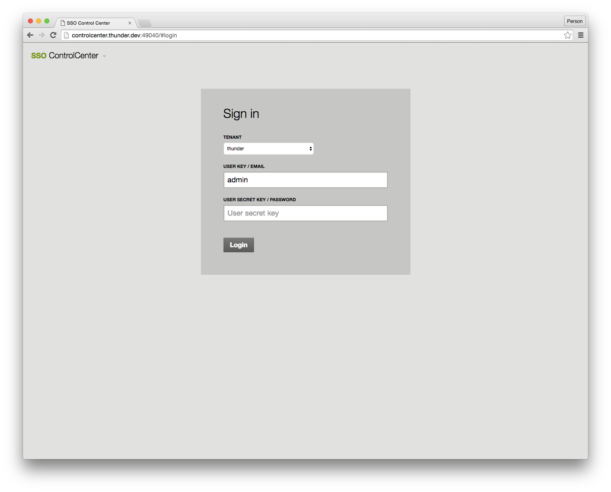
Control Center Dashboard
On the Control Center dashboard, select Harbourmaster to manage users.
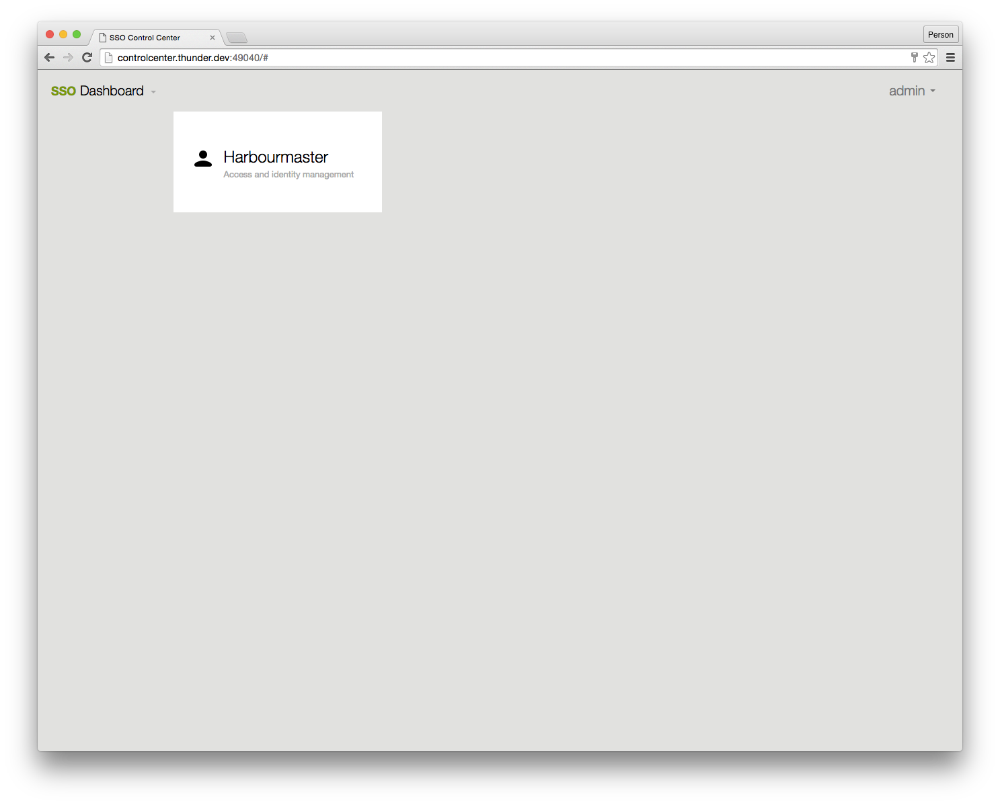
List Users
The Control Center lists all users function in paginated form on the left hand side. The list is searchable.
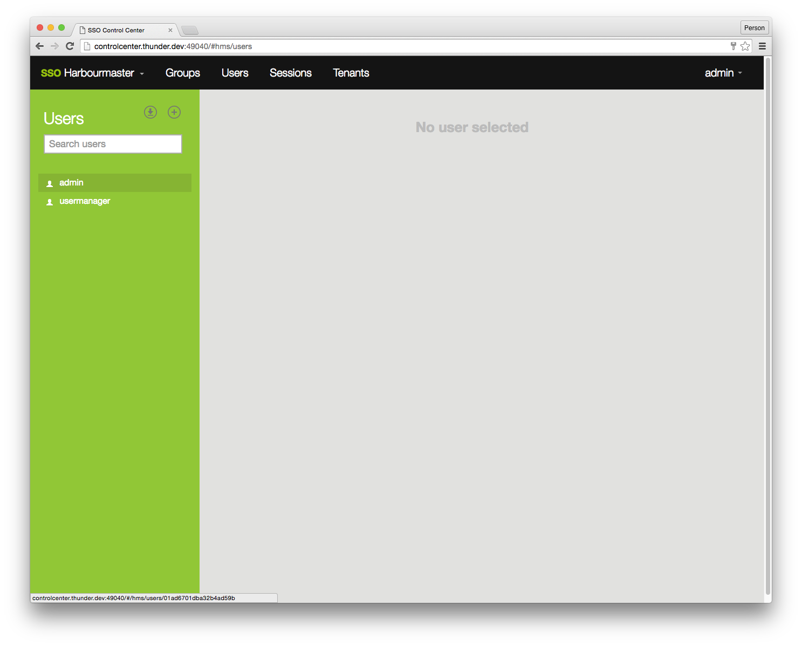
User Details
The Control Center shows all user details when clicking on a user from the list. On the user detail page the following admin actions can be done.
Change password for the user (requires knowledge of the user password)
Reset password (assign a new randomly generated password to the user, password will be displayed once)
Reset secret key (assign a new randomly generated secret key to the user, secret key will be displayed once)
Edit the user details
Delete the user
Add group to User
Remove group from user
Add policy to user
Remove policy from user
Edit user security questions
Add entitlement to user
Remove entitlement from user
OAuth Callback Whitelist (relevant for OAuth API user)
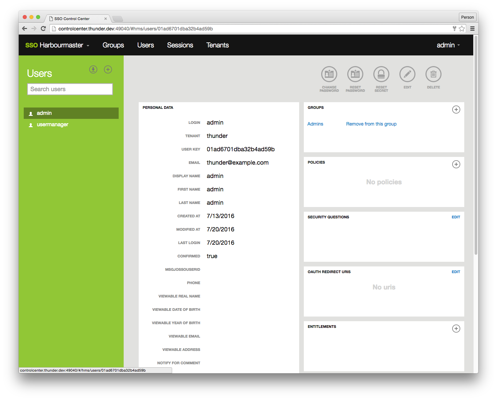
Create new user
The Control Center create user function has less validation than the usermanager widget used by internet users. e.g. the usermanager validates that the login name is not a email address, the Control Center cannot perform this validation. After a new user has been created, the interface will display a pop-up, which will show that user's secret key which is required for certain API calls.
Important: A new user has no default policies and therefore cannot login; you have to add a group to the new user.
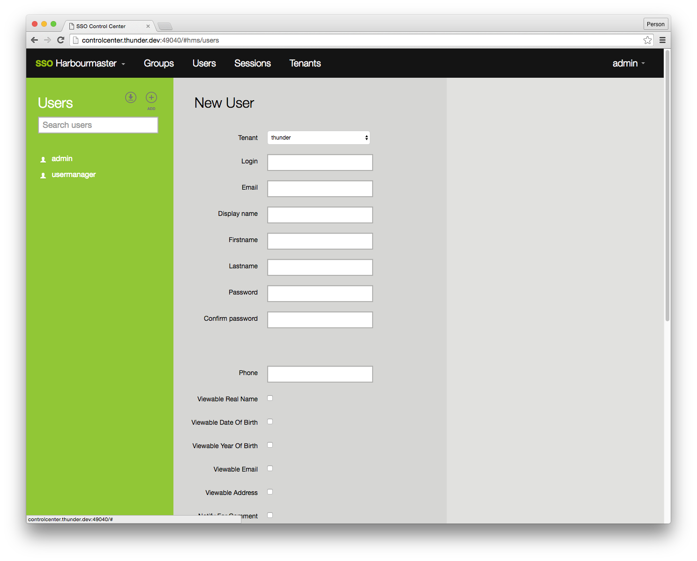
List Groups
The Control Center list all groups function.
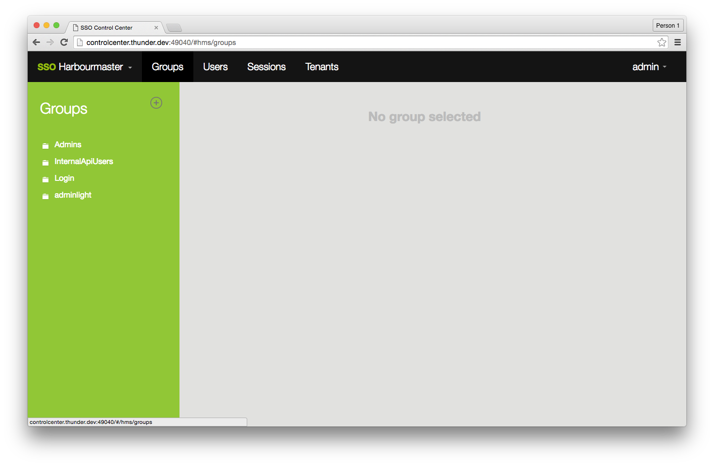
Create new Group
Create a new group for a tenant. Group names should not contain any whitespaces.
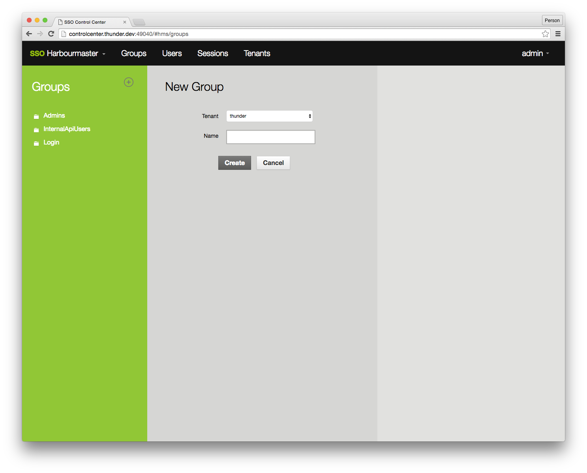
Create new Policy in Group OR User
Create a new policy. The UI represents the policy statements JSON structure as described in the Harbourmaster Policies.
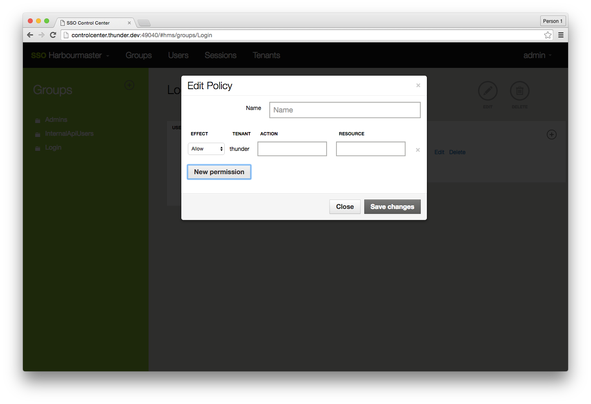
List tenants
List the tenants. All Harbourmaster entities such as users and groups are attached to one and only one tenant. A move from one tenant on other list not supported. In other words, a tenant represents one set of users.
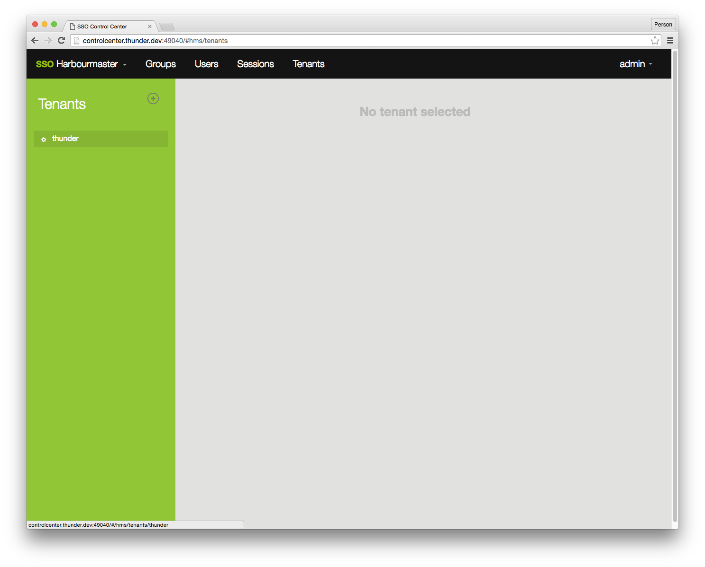
Show tenant
Show the details of a tenant.
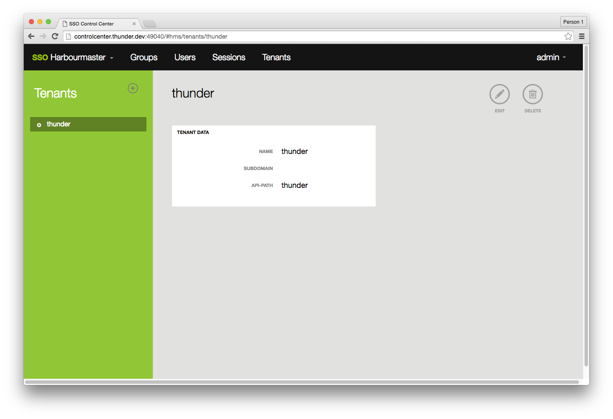
Create new tenant
Create a new tenant and define the API path, which will be used in the Harbourmaster API, as well as a name. Sub-domain configuration gets ignored at this stage.
Please note: a new tenant comes with no groups, no policies, no admin user. As a admin user with cross tenant access you have to create all necessary information. The initial tenant is created by the seed script which also creates a basic set of groups and policies.
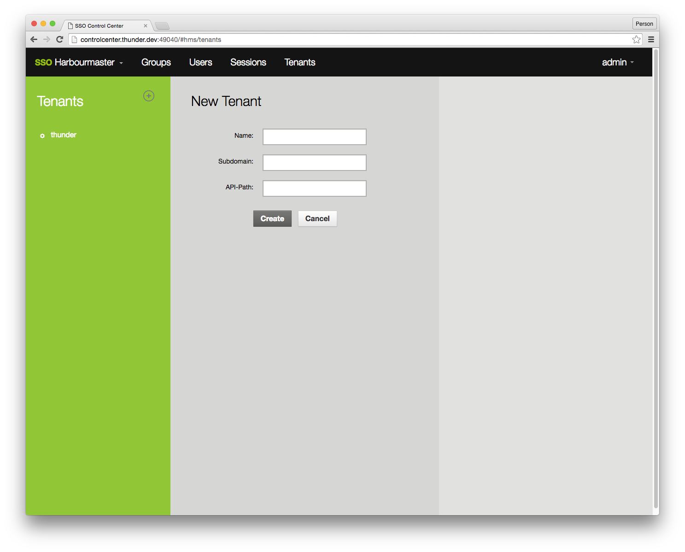
Edit Tenant
The Control Center allows the editing of a tenant; please use with caution as this can break access policies, and API access.
We do not recommend editing a tenant.
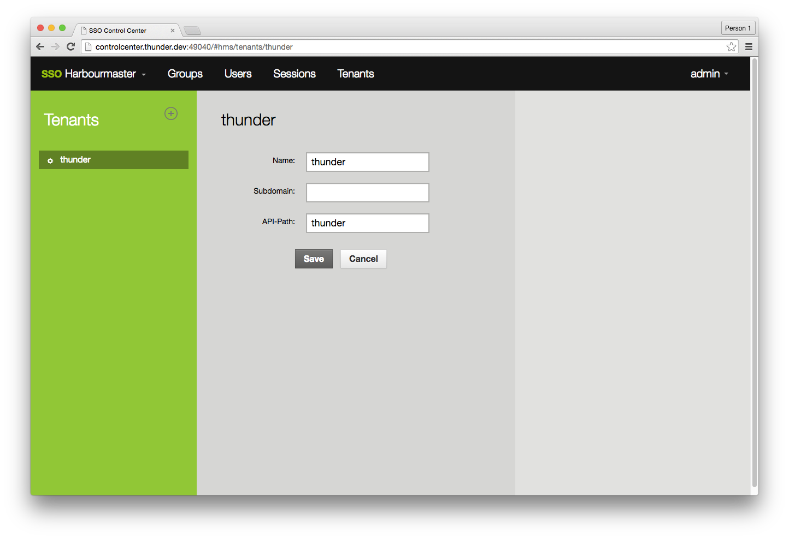